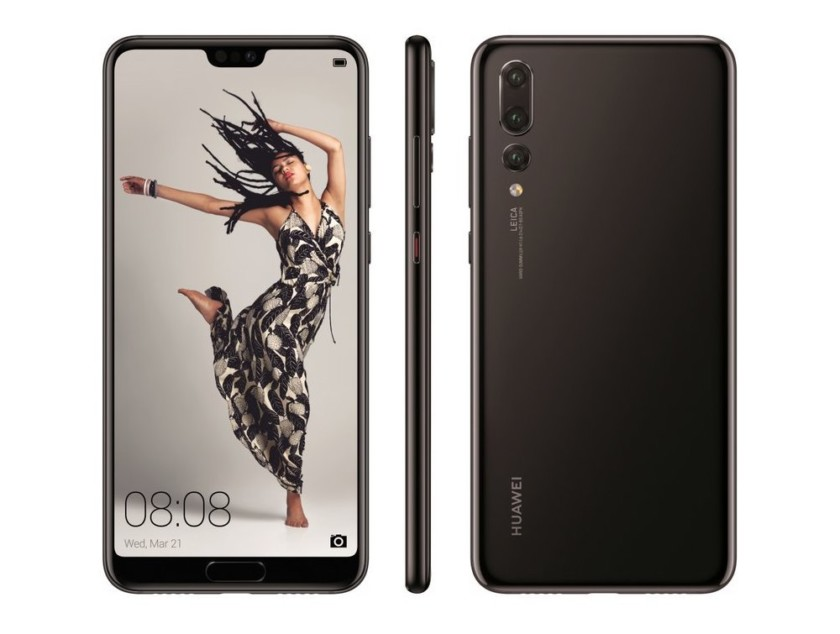

Уникальные смартфоны Huawei P20, Pro и Lite скоро в продаже!

Пользователями в сети Итернет уже давно был превосходно оценен флагман Huawei P20 и его варианты Pro (предыдущее кодовое название - P20 Plus) и Lite. Как мы уже знаем из статей о MWC, ведущий китайский производитель телефонов будет присутствовать на специальном мероприятии 27 марта в Париже.
В частности, там же будут озвучены цены на европейском рынке, на данный момент озвучены такие цены на Hawei P20 - 679 евро, P20 Pro за 879 евро, а версия P20 Lite будет стоить 369 евро.
Предполагается, что версии P20 и P20 Pro будут построены на чипсете Kirin 970, который управляет текущим флагманом от китайского производителя - Mate 10. Несмотря на разницу в цене и некоторые аппаратные отличия, Pro, как ожидается, будет единственным из трех, который сможет похвастаться тройной камерой, в то время как другие будут оснащены «стандартной» двойной камерой.
Lite версия для всех
Вариант Lite, так же как и телефон Mate 10 Lite, будет обладать более скромными аппаратным параметрами, но все же это не мешает ему работать на чипе Kirin 659 (как Mate 10 Lite) и иметь 4-6 ГБ ОЗУ (а также диагональ дисплея 5,5-5,7 дюйма и разрешение FHD +). Другими словами, «легкая» версия будет для тех, кто интересуется новым флагманом, но которым не нужны лучшие технические характеристики оборудования.
Среди прочих плюсов, трио смартфонов должно будет заманить покупателя своей камерой. Тройная камера Pro версии должна иметь разрешение 40 MPx и 5x гибридное увеличение. Для двух других смартфонов разрешение основной камеры пока неизвестно, но все три устройства будут иметь отличную фронтальную камеру для селфи разрешением 24MPx в соответствии с неофициальной информацией.